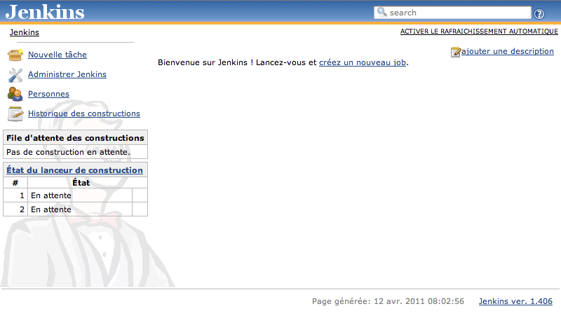
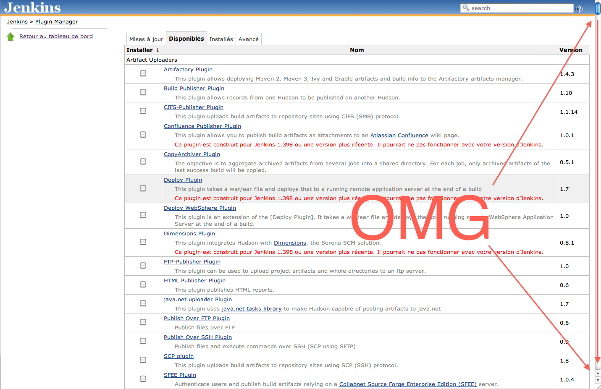
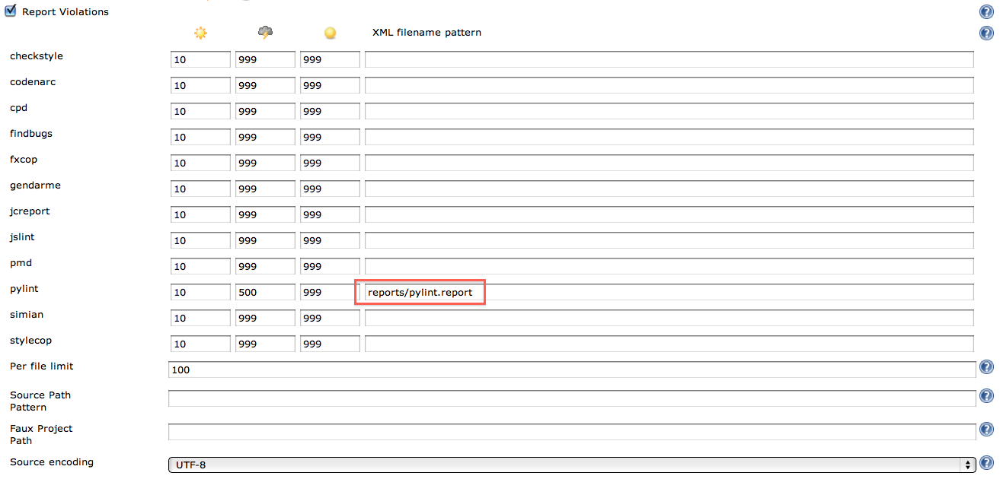
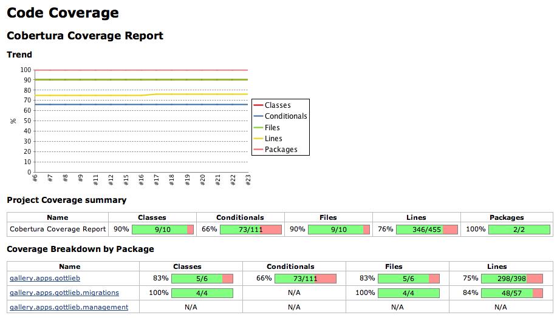
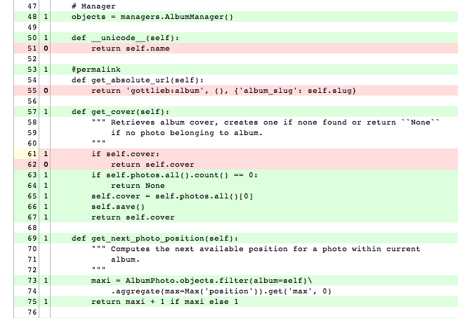

Intégration continue d'un projet Django
Qui suis-je ?
- Nicolas Perriault
- Développeur PYTHON & DJANGO
- http://akei.com/
- https://twitter.com/n1k0
Intégration quoi ?
L'intégration continue est un ensemble de pratiques utilisées en génie logiciel. Elles consistent à vérifier automatiquement à chaque modification de code source que le résultat des modifications ne produit pas de régression de l'application en cours de développement.
En français ?
T'as la droit de tout péter, mais t'es obligé d'être au courant.
— @n1k0
… ou comme dirait Jean-Claude
Il y a des gens qui n'ont pas réussi parce qu'ils ne sont pas aware, ils ne sont pas au courant. Ils ne sont pas à l'attention de savoir qu'ils existent. Les pauvres, ils savent pas. Il faut réveiller les gens.
Le but de l'intégration continue
- Avoir confiance en son propre code et celui de son équipe
- Responsabiliser les intervenants sur la qualité
- Pouvoir déployer plus sereinement
- Faire l'apéro plus tôt
- Soulager les perfectionnistes pressés sensibles au stress
Comment ?
Régulièrement et automatiquement :
- Contrôler l'intégrité unitaire et fonctionnelle
- S'assurer de l'absence de régressions
- Mesurer la couverture du code
- Surveiller le respect des conventions de codage
- Signaler les erreurs de codage
- Générer des rapports synthétiques utiles
Jenkins

Jenkins

Jenkins
- Anciennement Hudson
- Serveur d'intégration continue
- Écrit en Java (mais il fonctionne bien quand même)
- Open Source (sous licence MIT)
- Extensibilité, nombreux plugins
- Intégration avec les différents (D)CVS: Git, Mercurial, SVN, CVS (ne riez pas)
- http://www.jenkins-ci.org/
Installation de Jenkins
Installation de Jenkins
Ubuntu
$ wget -q -O - http://pkg.jenkins-ci.org/debian/jenkins-ci.org.key \
| sudo apt-key add -
$ sudo apt-get install jenkins
$ sudo /etc/init.d/jenkins start
OSX (using homebrew)
$ brew install jenkins
$ java -jar /usr/local/Cellar/jenkins/1.396/lib/jenkins.war
Windows
Allo ? Allo ? Je passe sous un tu
localhost:8080

Plugins
Plugins

Plugins INDISPENSABLES
Git,Mercurial,Bazaar: Intégration de DVCSCobertura: Intégration de métriques sur la qualitéJabber: Notification par messagerie instantannéeDoxygen: Génération automatique de documentationTwitter: Notification twitterChuck Norriz: ???
Création d'un nouveau projet
Projet Free-Style
Informations basiques
Configuration du (D)VCS
Astuce: en SSH vous pouvez placer vos clés dans le homedir de jenkins
Build triggers
- Syntaxe CRON
Étapes de build
WTF?
- On crée un
virtualenvs'il n'existe pas - On l'active
- On installe ou met à jour les dépendances avec pip
- On lance la suite de tests
Notifications
(pour l'envoi des notifications d'échec par email au client, ne faites pas ça chez vous, hein)
Houston, on a un problème
Mais… Mais… Jenkins, une fois qu'il a fini de lancer les tests, il fait quoi ?
Django-Jenkins
Django-Jenkins
- Application Django
- Open Source (LGPL)
- Effectue des opérations à destination de Jenkins :
- Joue les tests
- Lance des outils d'analyse de code (
Coverage,Pylint,PyFlaxes, etc…) - Décore les résultats obtenus de façon exploitables pour Jenkins (
xUnit)
- https://github.com/kmmbvnr/django-jenkins
Ça s'installe comment ?
Avec pip :
$ pip install django-jenkins
Puis ajoutez l'app jenkins dans vos INSTALLED_APPS.
C'est tout.
Pour l'utiliser, lancez la commande ./manage.py jenkins, l'export des résulats se fera dans le répertoire reports à la racine du projet :
$ ls ../reports/
TEST-gottlieb.tests.AlbumPhotoTest.xml TEST-gottlieb.tests.GottliebManagerTest.xml coverage.xml
TEST-gottlieb.tests.AlbumTest.xml TEST-gottlieb.tests.ModelTest.xml pylint.report
TEST-gottlieb.tests.ExifTest.xml TEST-gottlieb.tests.UtilsTest.xml
Configuration
Rapports de test
Configuration de Pylint

Configuration du Code Coverage
Légitime interrogation
Oui, bon, ok, mais ça donne quoi ?
Synthèse
Tintin au pays de l'intégration continue
Rapports de test
Détails d'un échec
Couverture de code

Couverture de code
Note: les zones en rouge montrent le code non couvert par les tests.

Violations
OH
On peut bien évidemment affiner la granularité des rapports de violation ;)
GithubWeb
GithubWeb est un plugin Jenkins générant des liens vers le code directement sur Github.
Violations
Principaux apports de la démarche
- Meilleur visibilité sur la qualité
- Responsabilisation des développeurs
- Bonne confiance sur les mises en production
- Utilisation possible sur tout type de projet et de configuration d'équipe
- Facile à installer et à intégrer à votre projet Django actuel !
Limites
- Nécessite l'écriture de tests (!)
- Java (#troll)
- Moche (#troll++)
- Potentielle incitation à la paresse intellectuelle
- Ne doit pas abstraire la vision KISS